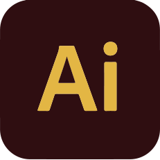
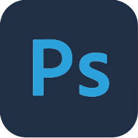
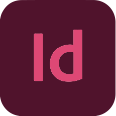
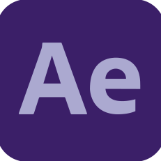
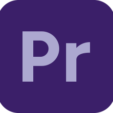

— Diseñadora Gráfica

— Un poco sobre mi
Estudiante de la carrera de Diseño y Comunicación Visual. Una persona curiosa, proactiva y con muchas ganas de seguir aprendiendo. Me gusta trabajar en equipo, enfrentar nuevos retos y encontrar soluciones creativas a los problemas. He tenido la suerte de participar en proyectos diversos que me han enseñado
a adaptarme rápido y a sacar lo mejor de cada situación.
Me apasiona lo que hago y siempre estoy buscando maneras de mejorar, crecer y aportar buenas ideas.
Si hay café y buen ambiente, seguro que podemos hacer grandes cosas juntos.
MANEJO DE PROGRAMAS
- Adobe Illustrator (Avanzado)
- Adobe Photoshop (Avanzado)
- Adobe InDesign (Avanzado)
- Adobe After Effects (Básico)
- Adobe Premiere (Básico)
APTITUDES
- Responsabilidad
- Creatividad
- Resolución de problemas
- Adaptación
- Trabajo en equipo
HISTORIA ACADÉMICA
- 2015-2020
- Instituto Paulo Freire
- Bachiller con orientación en economía
- 2021-Actualidad
- Universidad Nacional de Lanús
- Lic. en Diseño y Comunicación Visual
Brindo servicios de diseño gráfico orientados a crear piezas visuales que comuniquen con claridad y personalidad. Trabajo en la creación de identidades visuales, diseño de logotipos, material gráfico para redes sociales, web e impresos. Cada proyecto lo encaro con un enfoque creativo y funcional, buscando siempre reflejar la esencia de cada marca o idea.
Sobre mi
Proyectos
Contacto
+54 1123456789
lourbelena@gmail.com
Buenos Aires, Argentina